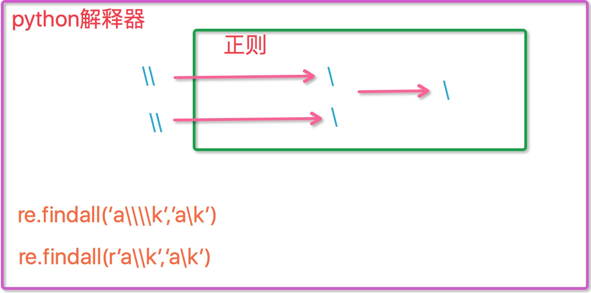

正则表达式re模块
1 正则表达式概念
正则表达式（RE）是一种小型的、高度专业化的编程语言，在python中，它通过re模块实现。
正则表达式可以实现以下功能：
- 为想要匹配的相应字符串集指定规则；
- 能够匹配不定长的字符集；
- 可以指定正则表达式的一部分的重复次数；
- 可以使用RE以各种方式来修改或分割字符串
正则表达式模式被编译成一系列的字节码，然后由C编写的匹配引擎执行。
2 字符匹配
2.1 普通字符：
- 多数字母和字符一般都会和自身匹配。
- 如正则表达式test会和字符串"test"完全匹配
import re
r = re.findall('el','hello world')
print(r)
2.2 元字符：. ^ $ * + ? {} [] | () \
2.2.1 元字符之 .
. 默认用来匹配除换行符(\n)之外的任意单个字符
编译时指定flag DOTALL则匹配任意单个字符，包括换行
import re
ret = re.findall('r..time', 'helloruntime')
print(ret) # ['runtime']
2.2.2 元字符之 ^
^ 用于匹配行首。除非设置MULTILINE标志，它只是匹配字符串的开始
在MULTILINE模式里，它也可以直接匹配字符串中的每个换行
import re
ret = re.findall('^r..time', 'hellorootime')
print(ret) # []
ret = re.findall('^h..lo', 'hellorootime')
print(ret) # ['hello']
2.2.3 元字符之 $
$ 用于匹配行尾，行尾被定义为要么是字符串尾，要么是一个换行字符后面的任何位置
import re
ret = re.findall('time$', 'hellorootime')
print(ret) # ['time']
2.2.4 元字符之 *
* 用于指定前一个字符可以被匹配零次或更多次，而不是只有一次。
匹配引擎会试着重复尽可能多的次数（不超过整数界定范围，20亿）
import re
ret=re.findall('abc*','abcccc') # 贪婪匹配[0,+oo]
print(ret) # ['abcccc']
ret=re.findall('abc*','ab')
print(ret) # ['ab']
2.2.5 元字符之 +
+ 用于表示匹配至少一次或多次
import re
ret=re.findall('abc+','abcccc') #[1,+oo]
print(ret) # ['abcccc']
ret=re.findall('abc+','ab')
print(ret) # []
2.2.6 元字符之 ?
? 用于匹配一次或零次：你可以认为它用于标识某事物是可选的
加在重复（+和*）的后面，可以启用懒惰模式，实现最小匹配
import re
ret=re.findall('abc?','abccc') # [0,1]
print(ret) # ['abc']
ret=re.findall('abc*?','abccc') # [0]
print(ret) # ['ab']
ret=re.findall('abc+?','abccc') # [1]
print(ret) # ['abc']
注意：前面的*和+以及?等都是贪婪匹配，也就是尽可能匹配，后面加?号使其变成惰性匹配
2.2.7 元字符之 {m,n}
{m,n} 用于匹配指定次数，其中m和n是十进制整数。该限定符的意思是至少有m个重复、至多到n个重复
忽略m会认为下边界是0，而忽略n的结果将是上边界为无穷大（实际上是20亿）
{0,}等同于*，{1}等同于+，而{0,1}则与?相同。若可以的话，最好使用*、+或?
import re
ret=re.findall('abc{1,3}','abccc')
print(ret) # ['abccc']
ret=re.findall('abc{1,3}','abc')
print(ret) # ['abc']
ret=re.findall('abc{1,3}','ab')
print(ret) # []
ret=re.findall('abc{0,}','abccccc')
print(ret) # [abccccc]
ret=re.findall('abc{0,1}','abccccc')
print(ret) # [abc]
ret=re.findall('abc{1}','abccccc')
print(ret) # [abc]
ret=re.findall('abc{1,3}','abccccccccc')
print(ret) # ['abccc']
2.2.8 元字符之 []
[] 常用来指定一个字符集：[abc]或[a-z]
元字符在字符集中不起作用：[akm$]
在[]内以^开头表示匹配不在区间范围内的字符：[^a-z]
import re
ret = re.findall('a[bc]d', 'acd')
print(ret) # ['acd']
ret = re.findall('[a-z]', 'acd')
print(ret) # ['a', 'c', 'd']
ret = re.findall('[.*+]', 'a.cd+')
print(ret) # ['.', '+']
# 在字符集里有功能的符号: - ^ \
ret = re.findall('[1-9]', '45dha3')
print(ret) # ['4', '5', '3']
ret = re.findall('[^ab]', '45bdha3')
print(ret) # ['4', '5', 'd', 'h', '3']
ret = re.findall('[\d]', '45bdha3')
print(ret) # ['4', '5', '3']
2.2.9 元字符之 \
反斜杠后面可以加不同的字符以表示不同特殊意义
反斜杠后边跟元字符去除特殊功能,比如.
反斜杠后边跟普通字符实现特殊功能,比如\d
| 字符 | 描述 |
|---|---|
| \d | 匹配任何十进制数；它相当于类 [0-9] |
| \D | 匹配任何非数字字符；它相当于类 [^0-9] |
| \s | 匹配任何空白字符；它相当于类 [ \t\n\r\f\v] |
| \S | 匹配任何非空白字符；它相当于类 [^ \t\n\r\f\v] |
| \w | 匹配任何字母数字字符；它相当于类 [a-zA-Z0-9_] |
| \W | 匹配任何非字母数字字符；它相当于类 [^a-zA-Z0-9_] |
| \b | 匹配一个特殊字符边界，比如空格 ，&，＃等 |
ret = re.findall('I\b','I am LIST')
print(ret) # []
ret = re.findall(r'I\b','I am LIST')
print(ret) # ['I']
现在我们聊一聊\,先看下面两个匹配
#-----------------------------egg1:
import re
ret = re.findall('c\l','abc\le')
print(ret) # []
ret = re.findall('c\\l','abc\le')
print(ret) # []
ret = re.findall('c\\\\l','abc\le')
print(ret) # ['c\\l']
ret = re.findall(r'c\\l','abc\le')
print(ret) # ['c\\l']
#-----------------------------egg2:
#之所以选择\b是因为\b在ASCII表中是有意义的
m = re.findall('\bblow', 'blow')
print(m)
m = re.findall(r'\bblow', 'blow')
print(m)

2.2.10 元字符之分组 ()
()即分组可以把一些数据划分为一个整体
当用findall作匹配时如果有分组则只返回分组中的数据
email = r'\w+@\w+\.(com|cn|com\.cn)'
m = re.findall(r'(ad)+', 'add')
print(m)
n = re.findall(r'(ad)+', 'adaad')
print(n)
ret=re.search('(?P<id>\d{2})/(?P<name>\w{3})','23/com')
print(ret.group()) # 23/com
print(ret.group('id')) # 23
print(ret.group('name')) # com
2.2.11 元字符之 |
| 用于匹配“|”左或右的字符
在指定字符串中先匹配到的内容将命中，成为group方法的返回值
ret = re.search('(ab)|\d','rabhdg8sd')
print(ret.group()) # ab
ret = re.search('(hello)|(world)','abcworldhhahello')
print(ret.group()) # world
3 正则表达式编译
re模块提供了一个正则表达式引擎的接口re.compile()函数，可将RE string编译成对象并用它们来进行匹配。
编译后的正则要比没编译而直接解释的正则处理速度要快很多。
编译正则表达式
import re
phone_number = re.compile('^\d{3,4}-?\d{8}$')
print(phone_number) # <_sre.SRE_Pattern object at 0x7f672ed46300>
print(phone_number.findall('010-12345678')) # ['010-12345678']
print(phone_number.findall('010-123456789')) # []
print(phone_number.findall('0120-12345678')) # ['0120-12345678']
re.compile()也接受可选的标志参数，常用来实现不同的特殊功能和语法变更。
p = re.compile(r'ab*',re.IGNORECASE)
编译标志-flags：后面的单个字母可以代替前面的单词，如re.S可以代替re.DOTALL
| 编译标志 | 描述 |
|---|---|
| DOTALL,S | 使"."点号匹配包括换行在内的所有字符 |
| IGNORECASE,I | 使匹配对大小写不敏感 |
| LOCALE,L | 使本地化识别（）匹配.法语 |
| MULTILINE,M | 多行匹配，影响和$。 适用于要匹配的文本分布在多行的情况下 |
| VERBOSE,X | 能使用REs的verbose状态，使之被组织得更清晰易懂。 适用于正则表达式分布在多行的情况下 |
3.1 执行匹配常用的函数
'RegexObject'实例有一些方法和属性，完整的列表可查阅Python Library Reference
- match()：决定RE是否在字符串刚开始的位置匹配
- search()：扫描字符串，找到这个RE匹配的位置，无论在字符串的什么位置均能找到
- findall()：找到RE匹配的所有子串，并把它们作为一个列表返回
- finditer()：找到RE匹配的所有子串，并把它们作为一个迭代器返回
注意：若未匹配到则match()和search()将返回None。若匹配成功则返回一个'MatchObject'实例对象
MatchObject实例方法：
- group()：返回被RE匹配的字符串
- groupdict()：将匹配的结果与给定的key生成一个字典并打印
- start()：返回匹配开始的位置
- end()：返回匹配结束的位置
- span()：返回一个元组包含匹配（开始，结束）的位置
import re
ret = re.search('(?P<id>[0-9]+)','abc1234daf@34')
print(ret.group()) # 1234
print(ret.groupdict()) # {'id': '1234'}
print(ret.start()) # 3
print(ret.end()) # 7
print(ret.span()) # (3, 7)
实际程序中，最常见的方法是将'MatchObject'保存在一个变量里，然后检查它是否为None。
import re
p = re.compile('(?P<id>[0-9]+)')
m = p.match('abc1234daf@34')
if m:
print('Match found: ',m.group())
else:
print('No match')
3.2 模块级函数
re模块也提供了顶级函数调用，如match()、search()、sub()、subn()、split()、findall()等
3.2.1 sub()与subn()
给定一个正则表达式pattern，将其作用于string字符串，并将匹配的内容修改成repl
re.sub(pattern, repl, string, count=0)
将hello world修改成hello python
import re
ret = re.sub(r'w...d','python','hello world')
print(ret) # hello python
ret = re.sub(r'w...d','python','hello world world world wordd',2)
print(ret) # hello python python world wordd
# subn返回一个匹配到的内容与匹配次数的元组
ret = re.subn(r'w...d','python','hello world world wordd')
print(ret) # ('hello python python python', 3)
3.2.2 split()
给定一个正则表达式pattern，将其作用于string实现分割
re.split(pattern, string)
以-+*为分割符分割后面的字符串
import re
ret = re.split('[-+*]','123+456-789*000')
print(ret) # ['123', '456', '789', '000']
ret = re.split('[ab]','haabcd') # 先按'a'分割得到'h',''和'bcd',再对'h',''和'bcd'分别按'b'分割
print(ret) # ['h', '', '', 'cd']
能否把[-+]换成[+-]呢？
3.2.3 findall()
返回所有满足匹配条件的结果,放在列表里
import re
ret = re.findall('e','sean cheng')
print(ret) # ['e', 'e']
ret = re.findall('www.(baidu|runtime).com', 'www.runtime.com')
print(ret) # ['runtime'] 这是因为findall会优先把匹配结果组里内容返回,如果想要匹配结果,取消权限即可
ret = re.findall('www.(?:baidu|runtime).com', 'www.runtime.com')
print(ret) # ['www.runtime.com']
ret = re.findall("<(?P<tag_name>\w+)>\w+</(?P=tag_name)>","<h1>hello</h1>")
print(ret) # ['h1']
3.2.4 search()
在字符串内查找模式匹配,直到找到第一个匹配然后返回一个包含匹配信息的对象,该对象可以通过调用group()方法得到匹配的字符串,如果字符串没有匹配，则返回None
import re
ret = re.search('e','sean cheng').group()
print(ret) # e
ret = re.search("<(?P<tag_name>\w+)>\w+</(?P=tag_name)>","<h1>hello</h1>")
print(ret.group()) # <h1>hello</h1>
ret = re.search(r"<(\w+)>\w+</\1>","<h1>hello</h1>")
print(ret.group()) # <h1>hello</h1>
3.2.5 match()
同search,不过仅在字符串开始处进行匹配
import re
ret = re.match('s','sean cheng').group()
print(ret)
3.2.6 finditer()
将匹配到的结果以迭代器的形式返回，可用next方法一个一个取出迭代器中的结果，也可用for循环依次取出
import re
ret = re.finditer('\d', 'ds3sy4784a')
print(ret) # <callable_iterator object at 0x0000000002100AC8>
# print(next(ret).group()) # 3
# print(next(ret).group()) # 4
# print(next(ret).group()) # 7
for i in ret:
print(i.group())
作业
写一个计算器程序，需求如下：
- 能够计算加减乘除
- 能够自动按照相应优先级进行运算
- 让用户输入要计算的公式，例如：1 - 2 * ( (60-30 +(-40/5) * (9-2*5/3 + 7 /3*99/4*2998 +10 * 568/14 )) - (-4*3)/ (16-3*2) )等类似公式后，必须自己解析里面的(),+,-,*,/符号和公式，运算后得出结果，结果必须与真实的计算器所得出的结果一致